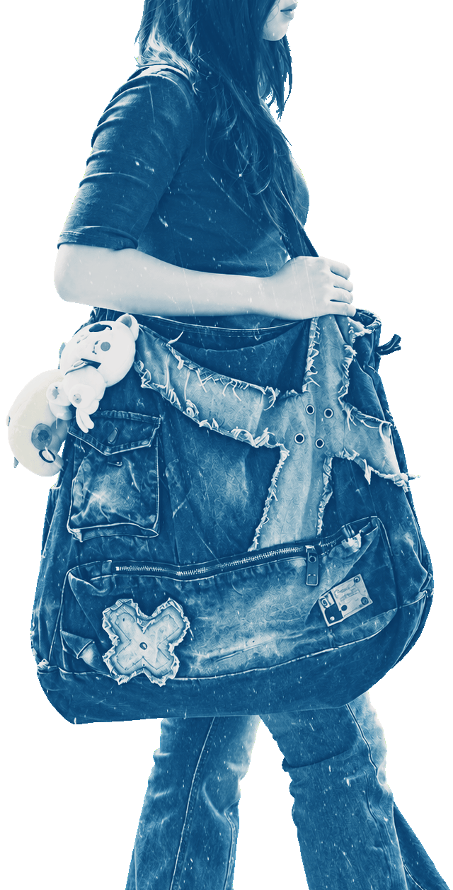

What's in My Bag?
A bag can say a lot about the person carrying it.
I have always preferred big bags.
They leave room for things I need,
things I might need,
and things I forgot were there.
My friends say I should get a smaller one
because everything disappears into the bottom.
But I like that nothing reveals itself all at once.
Take my bag and see what you find.